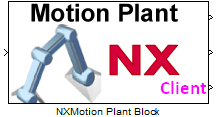
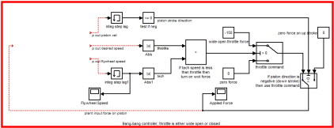
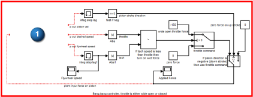

将 Motion Plant 块添加到控制系统框图中
在 MATLAB Simulink 中执行这些步骤，要获取更多关于这些步骤的细节，参见 Simulink 帮助文档。
-
开始 MATLAB Simulink。
-
将 Current Folder 设置为您保存运动仿真的文件夹(比如，文件夹 steam_engine)。
-
右击文件 controller_brute_force_controlled_Plant.m 并选择 Run。
Motion Plant 块出现。

-
选择 File→Open 并找到 steam_engine 运动仿真保存的文件夹。
-
打开文件 steam_force.mdl。
这个文件与练习文件放在一起，是一个预先定义的继电器式控制系统。花一些时间查看控制系统。

-
将 Motion Plant 块拖到框图中，如图
 所示的位置。
所示的位置。